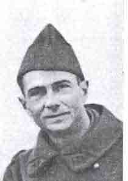
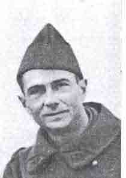

Русские французы
Руководитель: учитель французского языка Гусева Л. И.
Выполнили: ученики 7 – 8 классов
Представила: Семёнова Аня, 7 «А»
Аннотация
Цель нашего проекта – исследовать и показать, какой вклад внесли «русские французы» в историю отношений наших двух стран.
Данная работа посвящена двум событиям в истории французского языка - появлению слова Résistance в значении «антифашистское движение во Франции» и написанию гимна французских партизан, «Марша партизан», «Марсельезы» сражающейся Франции.
Мы рассказали о судьбе и подвиге Бориса Вильде, Анатолия Левицкого и Анны Марли , мало известных в нашей стране.
К сожалению, в наших учебниках французского языка сейчас такой темы нет.
Текст реферата сопровождается фотографиями, для «Марша партизан» сделан подстрочный перевод.
Создана презентация реферата в программе Power Point (с музыкальным сопровождением).
«Никто не забыт, ничто не забыто»
«Забудут!» – вот чем удивили!
Меня забывали сто раз.
Сто раз я лежала в могиле,
Где, может быть, я и сейчас.
А может, и глохла, и слепла,
В земле истлевала зерном,
Чтоб после, как феникс из пепла,
В эфире восстать голубом...»
А.Ахматова
1940 год .Франция оккупирована фашистской Германией. Территория страны разделена на 2 части: zone occupé, zone libre.(свободная и оккупированная зоны).
Тысячи людей подверглись депортации
Они еще улыбаются, они еще не знают, что их ждет...
18 июня 1940 года. Лондон. Генерал Шарль де Голль призывает французский народ к сопротивлению фашистам.
Сразу после оккупации Франции немцами русские французы начали борьбу с захватчиками.
“Qu'on rende justice à notre souvenir
après la guerre, cela suffit...”
Boris Vilde.
“Пусть после войны
воздадут должное памяти о нас –
этого достаточно...”
Борис Вильде.
Борис Вильде и Анатолий Левицкий
 

Борис Вильде (1908 – 1942) Анатолий Левицкий(1901-1942 гг.)
Борис Вильде и Анатолий Левицкий – сыновья русских эмигрантов, молодые ученые "Музея человека"- стали активными участниками первой организации сопротивления оккупантам.
Борис Вильде родился в 1908 году в Петербурге, затем до 10 лет жил в деревне Ястребино , что в 100км.от северной столицы. В 1919 году семья переехала в Эстонию. С 1932 года Борис Вильде во Франции.
«Бориса Вильде, Дикого, все любили на русском Монпарнассе за веселый открытый нрав, за товарищество. Никто, даже когда у него самого не было никаких средств к существованию, так легко, заведомо без отдачи, не давал денег в долг. Он никогда не участвовал ни в каких ссорах. Был товарищем надежным и верным.»
Владимир Варшавский
Герой без кавычек
А. Бахрах
Уже в августе 1940 г. они распространяли знаменитый нелегальный тракт "33 совета оккупированным", уже тогда расклеивали листовки : "Мы все с генералом де Голлем!" В группу входили университетская молодежь, ученые, музейные работники, а так же крупные писатели: Жан Кассу, Клод Авелин и Пьер Абрам.
Кроме печатной и устной пропаганды, которую они вели, как в Париже, так и в провинции, Вильде проводил весьма сложную и опасную работу по переправке в свободную зону, а оттуда на испанскую границу добровольцев в армию де Голля.
"Группа музея человека" выпустила нелегальную газету "Résistance" ("Сопротивление"), название которой потом было принято всем антифашистским движением Франции.
Первый номер "Резистанс" был редактирован тремя писателями, но основная, руководящая передовица ,написанная самим Вильде, стала одним из лозунгов всего
патриотического движения и была в ту эпоху передана лондонским радио:
Борис Вильде ,преданный провокатором ,был арестован 25 марта 1941г.Затем были арестованы и другие члены группы. Все они были расстреляны на Мон-Валерьен 23 февраля 1942 г.
Личность самого Вильде, еще и до войны, была окутана некоторой таинственностью и легендой. Подпольная жизнь была его родной стихией, - собрания заговорщиков, хранение оружия, борьба со слежкой, опасные свидания,- и если бы не его излишняя любовь к риску, его вечная азартная игра со смертью, - он мог бы стать руководителем всего движения против оккупантов.
«Вильде и Левицкий посеяли зерна сопротивления против мощного врага, их журнал, их деятельность, суд над ними и, наконец, их героическая смерть повлияли на многих и многих -- и эти первые ростки выросли в большое патриотическое движение во Франции, и умерли они не только за освобождение своей второй родины (как справедливо говорит Гюмбер: "Vildé était Russe comme Lewitsky, Walter, né a Metz de parents allemands avait opté pour la France et G. Ithier était natif de la République de Panama. On dit qu'ils sont morts pour la France; je pense, moi, qu'ils sont morts AUSSI pour la France!"), a за вечные идеалы, за освобождение всего человечества, чуть было не ввергнутого темным прусским гением в самое страшное средневековье.»
Б. Сосинский
Le 8 juillet 2008, dans le cimetière parisien d'Ivry, sur l'initiative du Musée de l'Homme et en présence de nombreux collaborateurs, une cérémonie a été organisée à l'emplacement-même ou repose Boris Vildé et ses compagnons de combat fusillés par les Nazis le 23 février 1942
Анна Марли
1942 год На радио Би-би- си каждый день на восьми языках передавали одну и ту же песню - «Герилья зонг» .Во Франции она называлась «Марш партизан». Мелодия "Марша партизан" стала позывными французского подпольного радио. Марш запела вся сражающаяся Франция. Автором и первым исполнителем этой песни была француженка русского происхождения Анна Бетулинская – Смирнова- Марли.
Anna Marly (1917-2006)
“ Elle fit de son talent une arme pour la France. ”
Général de Gaulle
Это о ней, нашей соотечественнице генерал де Голль сказал: «Своим талантом она создала оружие для Франции».
Анна Смирнова-Марли, певица, поэт, композитор родилась 30 октября 1917 в Петрограде в старинной дворянской семье.
Среди предков - Лермонтов и Столыпин, кузен матери - Бердяев. В доме над роялем висел портрет прабабушки, дочери атамана Платова, с надписью его рукой:"Дам в жены мою дочь тому, кто мне доставит Наполеона живым или мертвым".
«Анна, вы истинная сестра Вийона».
Жан Кокто
Ребенком ее увезли во Францию.
«Я родилась в Петрограде, как тогда назывался нынешний Санкт-Петербург, в октябре 1917 года. Увы, началась революция, и мой отец, Юрий Николаевич Бетулинский, и дядя, адмирал Веселкин, были арестованы и оба расстреляны. Мама осталась с двумя девочками на руках и с няней. Чтобы как-то укрыть нас, они надели какие-то тулупы и пошли с нами пешком через Петроград, через лес - к финской границе. В Финляндии сели на пароход и причалили на севере Франции. А потом друзья посоветовали маме ехать с детьми на солнышко, на Лазурный берег. Так что моя жизнь началась на юге Франции, на Средиземном море. Конечно, я чувствую себя русской. Но в то же время я француженка.»
А.Марли
Она выступала как балерина и завоевала титул первой красавицы зарубежной России.
«Трудно было, ни у кого не было денег, но мы как-то устраивались. Плакали по ночам, но выживали красиво… Тогда каждая страна выбирала себе красавицу, в том числе и Россия, зарубежная, конечно… И вот мы предстали перед жюри, в котором были легендарные люди: Серж Лифарь, Немирович-Данченко, Коровин, Тэффи. И все это сидело и смотрело на нас! Так вот меня и выбрали "Мисс Россией"»
А.Марли
Свои песни Анна исполняла под гитару в легендарном кабаре "Шехерезада". Ее сравнивали с Александром Вертинским. Ей заказывали песни Морис Шевалье, Саша Гитри, Луи Потера (с легкой руки последнего и появился звучный псевдоним – Анна Марли).
Однако настоящая слава пришла к ней во время войны - когда из Лондона на волнах Би-би-си полетела во Францию ее "Песня партизан", чтобы стать гимном Сопротивления.
Интересна история появления на свет "Марша партизан". Вот как рассказывает о рождении своей самой знаменитой песни Анна Марли: « В 1942 году я попала в английскую армию, в разъездной театр, созданный знаменитым актером Джоном Гилгудом. Там я получила офицерский чин, но форму надевала, только когда выезжала из страны. С театром мы объездили всю Англию. И вот однажды мы выступали перед военными моряками. Я сидела в ожидании своего выхода за сценой. Сижу, а передо мной на столе английская газета лежит. И там сказано, что в России идут невероятные бои под Смоленском. Город осажден, разрушен, вовсю полыхают пожары, но русские защищаются, как львы. Почти безоружные жители уходят в лес и там устраивают засады, бросаясь на врага чуть ли не голой грудью. Называются они партизанами (я впервые узнала это слово). И так на меня эта картина подействовала, что мое русское сердце заплакало, и я начала отбивать ритм шагов идущих по дороге людей. Потом пришли в голову слова "От леса до леса дорога идет вдоль обрыва…". Потом музыка. И вот пришло мое время выходить на сцену. В зале сидели 800 моряков, и я решила исполнить им песню, которую только что сочинила. Сначала я им ее перевела, так как пела по-русски. Они слушали внимательно, но в конце как-то все замолчали. И вдруг - аплодисменты, свист, крик, топот ног - англичане выражают свой восторг особенно! В общем, полный успех. Я сразу взяла эту песню в свой репертуар, исполняла по радио, когда о французских партизанах мы еще ничего и не слышали.»
От леса до леса дорога идет вдоль обрыва ,
А там высоко где-то месяц плывёт торопливо .
Пойдём мы туда, куда ворон не летит, зверь не ходит ,
Никто, никакая сила нас не покорит, не прогонит .
Народные мстители, мы отобьем злую силу ,
Пусть ветер свободы засыплет и нашу могилу...
Пойдем мы туда и разрушим до конца вражьи сети.
Пусть знают, как много за правду нас легло,наши дети!..
Анна Марли написала слова марша по-русски, мысленно обращаясь к русским партизанам, и только некоторое время спустя Жозеф Кессель и Морис Дрюон предложили французскую версию текста.
«Они пришли в такой восторг, что знавший русский язык Кессель закричал: "Вот что нам нужно для Франции!"»
А.Марли
Марш запела вся сражающаяся Франция.
Ami, entends-tu le vol noir des corbeaux sur nos plaines?
Ami, entends-tu les cris sourds du pays qu'on enchaîne?
Ohé! partisans, ouvriers et paysans, c'est l'alarme!
Ce soir l'ennemi connaîtra le prix du sang et les larmes!
Montez de la mine, descendez des collines, camarades!
Sortez de la paille les fusils, la mitraille, les grenades...
Ohé! les tueurs, á la balle et au couteau, tuez vite!
Ohé! saboteur, attention à ton fardeau: dynamite!
C'est nous qui brisons les barreaux des prisons pour nos frères,
La haine à nos trousses et la faim qui nous pousse, la misère...
Ilya des pays où les gens au creux de lits font des rêves;
Ici, nous, vois-tu, nous on marche et nous on tue, nous on crève.
Ici chacun sait ce qu'il veut, ce qui'il fait quand il passe...
Ami, si tu tombes un ami sort de l'ombre á ta place.
Demain du sang noir sèchera au grand soleil sur les routes.
Sifflez, compagnons, dans la nuit, la libertés nous écoute ...
Друг, ты слышишь черный полет воронья над нашими равнинами?
Друг, ты слышишь глухие стоны страны, которую заковывают в цепи.
Эй, партизаны, рабочие и крестьяне! Тревога!
Этим вечером враг узнает цену крови и слез!
Товарищи !Поднимайтесь из шахт, cпускайтесь с холмов!
Доставайте свои ружья, пулеметы, гранаты..
Бойцы! Принимайтесь за пули ,ножи,динамит!
Мы разорвем решетки тюрем и освободим наших братьев,
Ненависть, голод и нищета ведут нас...
Есть места, где люди спят спокойно в своих кроватях;
А мы, ты видишь, мы идем, мы убиваем, мы погибаем.
Здесь каждый знает, чего он хочет, что он делает…
Друг, если ты упадешь, другой выйдет из тени и займет твое место.
Завтра черная кровь высохнет под ярким солнцем на наших дорогах.
Свистите, друзья, в ночи, свобода нас слушает…
(перевод ГусевойЛ.И. и учеников Дрезненской СОШ№1)
«Вы были символом молодости и таланта, Ваши песни помогли нам пережить самое трудное время, пока не пришла победа»
Морис Дрюон
После войны «Песня партизан» достигла такой популярности, что её предлагали сделать национальным гимном Франции.
«Сразу после войны я очень много пела в Париже. Я действительно была "Трубадуром Сопротивления", как меня тогда называли». Анна Марли приняла участие в торжественном концерте в Париже, выступая вслед за Эдит Пиаф. (Позже Эдит Пиаф спела ее "Песню на три такта».)
Из воспоминаний А. Марли:
"Партер сверкает золотом, блистают ордена на военных мундирах, парижская элита окружает де Голля и его штаб. Хор в 180 человек одет в цвета национального флага. Я с моей гитарой кажусь песчинкой на огромной сцене. Странно: не чувствую ни страха, ни смущения. Сначала поет хор, а потом я под гитару исполняю "Марш партизан", "Гимн Освобождения" и "Марсельезу". Весь зал как один человек встает, все поют Гимн Свободы.
В первом ряду сидят моя мать и няня. Няня – крестьянка из Новгородской губернии. В свое время она бросила все, уехала с нами в эмиграцию...
А потом – торжественная церемония на эспланаде Дома инвалидов. Я пою, сидя на сцене на фоне знамен союзнических армий.»
С1946 года Анна Марли жила в Америке, где получила признание как композитор. В Рио-де-Жанейро она встретила своего соотечественника Юрия Александровича Смирнова, главного специалиста металлургической промышленности Чили. Они поженились и прожили в любви 52 года.
"Часто мне хотелось с концертами поехать на Родину, но эмигрантское клеймо мне мешало» Анна Марли. Она много писала на эту тему:
Потемнело в душе за всё время,
что скитаюсь по краям чужим!
Заложила судьба ногу в стремя,
и летим день за днём, и летим!
Не поплакать ни с кем, не забыться –
Всё чужое, чужое кругом,
а на висках уже серебрится
Eё песни также пели прославленные певцы - Эдит Пиаф, Джоан Баез, Джонни Холидей, Леонард Коэн, Ив Монтан, Мирей Матье.
Она живо откликалась на всё, происходящее в мире
Вот например отрывок из большого произведения – молитвы, которую она написала под впечатлением очередных международных новостей – «Буря в пустыне», июль 1992г. ( перевод с французского А.Хайретдиновой ):
« О Боже, света воплощенье,
Свети своим лучом тому,
Кто бродит в темноте сомненья …
Неиссякаемый Источник –
Дай страждущим воды,
Раскаянье вложи в невежд,
Маньяков, гордецов,
Набрось на воинов- слепцов,
Ведомых алчными вождями,
Покров свой милосердный….,
Останови безумцев!..»
Известность Анны Марли во Франции, а потом и в России всё росла. В парижском пригороде Медоне её именем назван сквер, как и большой культурный центр в городе Сен-Жан-де-ля Рюэль и музыкальная школа в Отуне. Музей второй мировой войны в Париже посвятил ей часть экспозиции.
Московское издательство «Русский путь» выпустило в свет сборник Анны Марли «Дорога домой» с предисловием знавшего её Валентина Распутина. В него вошли впервые переведенные на русский язык стихи, басни, песни. Российские телезрители увидели два документальных фильма об Анне Марли. В Кисловодске поставлена пьеса, рассказывающая о её жизни, в музее театра - мемориальные вещи, портрет и рукописи Анны Марли. В Таганроге, в доме её предков – дворце Алфераки – теперь музей, часть мемориальных экспонатов которого передана в Россию из Америки Анной Марли. Национальные архивы разных стран хранят рукописи, документы, связанные с её жизнью и творчеством.
В июне 2000 г., в день 60-летия обращения генерала де Голля к нации, она посетила Париж , где ее удостоили высших воинских почестей и права зажечь огонь у
Могилы Неизвестного Солдата под Триумфальной аркой. Она стала второй женщиной, после английской королевы Елизаветы, которой доверили эту честь. Анна Марли
— кавалер Ордена Почетного Легиона,
автор свыше 300 песен на пяти языках, поэтического сборника "Мессидор", книги басен, нескольких сценариев – она создала в Буэнос-Айресе музыкальный театр, в США несколько лет руководила детским хором , основала французский салон во Флориде, написала книгу своих воспоминаний "Певец Свободы".
"Меня как будто вихрем носили вдохновение и творчество, – писала в своих письмах Анна Юрьевна , – Я в жизни ничего не боялась и шла вперед, правда, принимая на себя часто самое тяжелое. Видно, рыцарская кровь играет. В моей жизненной мозаике много, достаточно, чтобы заполнить жизнь целиком. »А.Марли
Анна Марли умерла 15 февраля 2006 года на Аляске в возрасте 88 лет. Не сбылась, к сожалению, её мечта увидеть, наконец, Россию. Тело её погребено в земле Аляски, столь близкой к северо-восточной оконечности России, а в сущности – в земле, бывшей когда-то частью России, к которой Анна Марли так стремилась.
«Еще одно имя замечательного русского человека, Анны Марли, возвращается на Родину. Возвращается не столько для того, чтобы собрать знаки почитания и любви, сколько для какого-то сводного отчета о талантливости и жизнеспособности нации»
Валентин Распутин
Заключение
Прошедшие годы были как страшный суд. Миллионы людей, и в их числе русские эмигранты, были подвергнуты испытанию: не на словах, а на деле, они должны были показать, чем в действительности они являются и что по настоящему они думают. Люди, принадлежавшие к одному кругу, разделявшие на словах одни и те же взгляды, все казались более или менее одинаковыми. Но проба страшных лет обнаружила незаметные на поверхности обыденной жизни глубинные различия, как бы проявленные в свободном действии в обстоятельствах исключительно трагических. Мы не должны забывать, как в эти годы расставились на лестнице восхождения личности: одни в самом низу, другие на средних ступенях, третьи - на верхнем конце, уходящем в открытую вечность жизни.
К этим третьим, чьи доблесть и пролитая праведная кровь спасли честь имени зарубежного русского, принадлежали и БОРИС ВИЛЬДЕ, АНАТОЛИЙ ЛЕВИЦКИЙ, АННА МАРЛИ.
Наша работа не закончена. Есть еще много имен , прославивших нашу Родину за рубежом, внесших свой вклад в развитие русско - французских отношений.
Памятник русским участникам Сопротивления на парижском кладбище Пер-Лашез .
Приложение
Последнее письмо Бориса Вильде к жене
Простите, что я обманул Вас: когда я спустился, чтобы еще раз поцеловать Вас, я знал уже, что это будет сегодня. Сказать правду, я горжусь своей ложью: Вы могли убедиться, что я не дрожал, а улыбался, как всегда. Да, я с улыбкой встречаю смерть, как некое новое приключение, с известным сожалением, но без раскаяния и страха. Я так уже утвердился на этом пути смерти, что возвращение к жизни мне представляется очень трудным, пожалуй, даже невозможным.
Моя дорогая, думайте обо мне, как о живом, а не как мертвом. Я не боюсь за Вас. Наступит день, когда Вы более не будете нуждаться во мне: ни в моих письмах, ни в воспоминании обо мне. В этот день Вы соединитесь со мной в вечности, в подлинной любви.
До этого дня мое духовное присутствие, единственно подлинно реальное, будет всегда с Вами неразлучно.
Вы знаете, как я люблю Ваших родителей: они мне стали родными. Благодаря таким французам, как они, я узнал и полюбил Францию. Пусть моя смерть будет для них скорей предметом гордости, чем скорби.
Постарайтесь смягчить известие о моей смерти моей матери и сестре. Я часто вспоминал о них и о моем детстве. Передайте всем друзьям мою благодарность и мою любовь.........
Понедельник, 23-е Февраля 1942 года.
Прощальное письмо родным и друзьям Анатолия Левицкого
Дорогие мои,
Пишу вам всем вместе, так как мне трудно написать каждому отдельно, да и в сущности, это было бы ни к чему.
Знайте, что я люблю вас всей душой и жалею, что не достаточно вам это доказал, пока было еще не поздно.
Не могу себе простить горя, которое я вам причиняю, и умоляю вас простить меня всем сердцем, без всяких задних мыслей.
Я не ожидал столь быстрой развязки, но быть может лучше, что это так.
Я готов уже давно и совершенно спокоен. Мне кажется, что душа моя в мире с Богом. Да исполнится Его воля.
Пусть возьмет Он и вас под Свое высокое покровительство!
В последний раз от всей души обнимаю вас.
АНАТОЛИЙ.
Фрэн, 22-ое февраля 1942 г.
Этот текст выбит на памятной доске в вестибюле Музея Человека:
«ВИЛЬДЕ. Оставлен при университете, выдающийся пионер науки, целиком посвятил себя делу подпольного Сопротивления с 1940 года. Будучи арестован чинами Гестапо и приговорён к смертной казни, явил своим поведением во время суда и под пулями палачей высший пример храбрости и самоотречения»
«ЛЕВИЦКИЙ. Выдающийся молодой учёный, с самого начала оккупации в 1940г. принял активное участие в подпольном Сопротивлении. Арестован Гестапо, держал себя перед немцами с исключительным достоинством и храбростью, вызывающим восхищение»
Генерал де Голль. Алжир, 3 ноября 1943г.
Главы из биографической прозы Анны Марли.
В июне 40-го Париж был объявлен "открытым городом". Военные решили не сопротивляться, а сложить оружие и впустить немцев. Они решили избежать кровопролития. И тогда начался знаменитый "исход". Из Парижа выбирались кто как мог - пешком, на телегах, велосипедах, автомобилях. В то время я была замужем за голландским дипломатом, и мы всей семьей отправились на север. Остановившись в первом же городе, мы бросились к радио и услышали голос дряхлого маршала Петэна. Ему было далеко за восемьдесят, он был героем первой войны, его биографию мы изучали еще в школе. И он сказал, что во имя мира сдал немцам Париж. Я прекрасно помню эту картину: мы все рыдали, обнимая и целуя друг друга, понимая, что это конец: Париж был потерян, и мы поняли, что немцы пойдут дальше на север, вслед за нами. И мы повернули на юг, к Бордо, а там уже услышали по радио другой голос, из Лондона. Это был никому тогда не известный бригадный генерал де Голль, сказавший, что "Франция проиграла битву, но не проиграла войну", и призвавший всех патриотов Франции присоединиться к нему для борьбы с оккупантами. Мы с мужем были молодые, и у нас была только одна мечта - ехать на войну и драться за Францию. Мама, няня и сестра вернулись в Париж. А мы из Бордо перебрались в Испанию, потом в Португалию, откуда в феврале 1941 года вылетели военным самолетом в Лондон, где муж получил работу в новом голландском правительстве. Это было время "блицкрига" - немцы безостановочно бомбили Англию. Лондон был похож на Дантов ад. Все вокруг горело и рушилось, все время падали бомбы. Улицы были засыпаны битым стеклом от магазинных витрин, а в воронках из-под бомб лежали люди, разорванные на куски. Там можно было сойти с ума.
Суп для генерала де Голля.
Когда мы обосновались в Лондоне, я поступила работать в столовую при центре де Голля "Свободная Франция". Несколько этажей центра были заполнены военными всех родов войск: пехотой, моряками, летчиками, был даже женский батальон. Много людей приехали из французских колоний. Я не была знакома близко с де Голлем, но видела его каждый день в столовой, где я работала первые месяцы, когда он спускался завтракать или обедать. Он был весьма трудный господин, с характером. Все французы любят суп. И вот однажды я принесла ему суп, а он был страшно недоволен и сказал: "Вы знаете, суп должен быть всегда горячий". Тут я рассердилась на него, не подав, конечно, виду, побежала на кухню и спрашиваю: "Что это за господин такой скучный сидит, да еще с таким большим носом?" - "А, да это бригадный генерал де Голль". Нам, да и никому в те времена, это имя еще ничего не говорило. Я попросила, чтобы мне дали суп такой горячий, какой он себе сам никогда не сделает. Принесла, он попробовал, посмотрел на меня уже не сердито, улыбнулся и сказал: "Вот, мадемуазель, суп должен быть очень горячий!" После работы я всегда пела для собравшихся свои новые песни и однажды познакомилась с редакцией радиостанции "Французы говорят с французами", которая и стала их передавать в эфир. Наибольшей популярностью пользовались "Париж наш", "Франция" и, конечно же, "Песня партизан".
Трубадур Сопротивления.
Сразу после войны я очень много пела в Париже. Я действительно была "Трубадуром Сопротивления", как меня тогда называли. И приняла участие в торжественном
концерте в Париже, выступая вслед за Эдит Пиаф. Позже Эдит Пиаф спела мою "Песню на три такта". Когда я ей эту песню принесла, она гримировалась перед тем,
как выйти на сцену. И особенного внимания на меня не обращала. А я за ее спиной напевала свою песню под гитару. Вдруг она повернулась и сказала: "Слушайте,
вы - большой поэт. Я сразу эту песню беру". В то время де Голль везде меня видел и без конца поздравлял. И в один прекрасный день в мою квартиру пришел
конверт, в котором была его фотография с надписью: "Мадемуазель Анне Марли, которая сделала свой талант оружием для Франции". Это изображение его лучшего,
зрелого периода. Теперь оно висит в рамке у меня в гостиной. Я уехала из Франции в 1946 году. После войны вообще многие уезжали - кто в Южную Америку, кто
в Австралию, кто в Лондон. Ведь мы были "новые" французы, у нас были свои идеалы. Мы мечтали о новой, справедливой Франции, и многое из того, что
получилось, нам не нравилось. Меня пригласили выступать в Южную Америку. Мне там очень понравилось. Там я познакомилась со своим вторым мужем Юрием
Александровичем Смирновым.
Источники
- Бахрах А. Герой без кавычек (Борис Вильде) М., 2005.
- Бедарида Ф. «Свет, просвещающий смерть»: Пер. с фр. // Вильде Б. Дневник и письма из тюрьмы, 1941—1942. М., 2005.
- Вильде Б. Дневник и письма из тюрьмы, 1941—1942 / Пер. с фр. М. И. Иорданской. М., 2005.
- Людмила Тобольская «А ПЕСНИ ОСТАВЛЕНЫ НАМ… памяти Анны Марли»Статья опубликована в "Исторической газете". Январь 2008 № 2 (98)
- АННА МАРЛИ -РУССКАЯ МУЗА ФРАНЦУЗСКОГО СОПРОТИВЛЕНИЯ. Асия Хайретдинова ,комментатор радиокомпании "Голос России".
- Беседа с автором «Песни партизан». Анна Марли, песня и судьба // Е.Белопольская "Русская мысль", Париж, N 4327, 20 июля 2000 г.
- "АННА СМИРНОВА-МАРЛИ. ДОРОГА ДОМОЙ" М.;"Русский путь", 2004, составитель Асия Хайретдинова. Из автобиографической книги Анны Марли "Певец свободы"
- www.aeri-resistance.com
- www.vilde.fr
- www.mere-marie.com
- www.fap.ru
- www.anna-marly.narod.ru
- stengazeta.blogs.courrierinternational.com/anna_marly/
- fr.wikipedia.org/wiki/Anna_Marly
- www.cheminsdememoire.gouv.fr
- www.russian-romance.ru